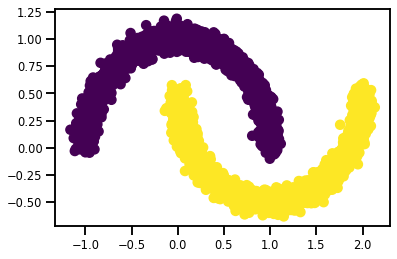
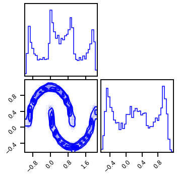
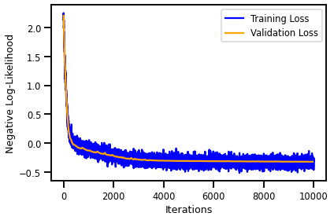
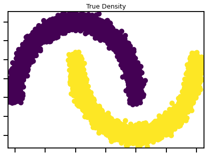
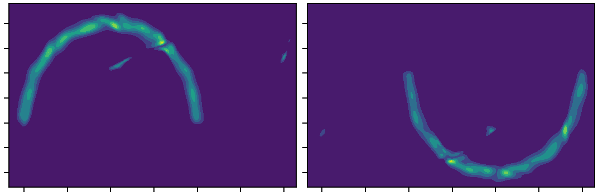

Demo - Conditional Gaussianization Flow (Classification)¶
# @title Install Packages
# %%capture
try:
import sys, os
from pyprojroot import here
# spyder up to find the root
root = here(project_files=[".here"])
# append to path
sys.path.append(str(root))
except ModuleNotFoundError:
import os
os.system("pip install objax chex")
os.system("pip install git+https://github.com/IPL-UV/rbig_jax.git#egg=rbig_jax")
# jax packages
import jax
import jax.numpy as jnp
from jax.config import config
# import chex
config.update("jax_enable_x64", False)
import objax
import chex
import numpy as np
from functools import partial
KEY = jax.random.PRNGKey(seed=123)
# logging
import tqdm
import wandb
# plot methods
import matplotlib.pyplot as plt
from matplotlib import cm
import seaborn as sns
import corner
from IPython.display import HTML
sns.reset_defaults()
sns.set_context(context="talk", font_scale=0.7)
%load_ext lab_black
%matplotlib inline
%load_ext autoreload
%autoreload 2
INFO:tensorflow:Enabling eager execution
INFO:tensorflow:Enabling v2 tensorshape
INFO:tensorflow:Enabling resource variables
INFO:tensorflow:Enabling tensor equality
INFO:tensorflow:Enabling control flow v2
WARNING:absl:No GPU/TPU found, falling back to CPU. (Set TF_CPP_MIN_LOG_LEVEL=0 and rerun for more info.)
Demo Data¶
from sklearn import datasets
from sklearn.preprocessing import StandardScaler
# %%wandb
# get data
seed = 123
n_samples = 5_000
noise = 0.05
def f(n_samples: int = 5_000, noise: float = 0.05, seed: int = 123):
X, Y = datasets.make_moons(n_samples=n_samples, noise=noise, random_state=seed)
# X, Y = datasets.make_circles(
# n_samples=n_samples, noise=noise, random_state=seed, factor=0.5
# )
return X, Y[:, None]
X, Y = f(n_samples, noise, seed)
Y_labels = label_binarize(Y, classes=np.unique(Y))
fig, ax = plt.subplots()
ax.scatter(X[:, 0], X[:, 1], c=Y)
plt.show()

# plot data
fig = corner.corner(X, color="blue", hist_bin_factor=2)

DataLoader¶
from typing import Optional
from chex import Array
from einops import rearrange
PRNGKey = Array
def prepare_data(batch: Batch, rng=None) -> Array:
inputs, labels = batch
# select image from tfds
inputs = inputs.astype(jnp.float32)
labels = labels.astype(jnp.float32)
return inputs, labels
Model¶
from rbig_jax.models.gaussflow import init_default_gf_model
# marginal uniformization
mixture = "gaussian"
n_components = 10
init_mixcdf = "gmm"
# inverse cdf
inverse_cdf = "gaussian"
# rotation transformation
n_reflections = 2
init_rotation = "random"
# nn params
n_blocks = 8
# init model
gf_model = init_default_gf_model(
shape=X.shape[1:],
X=X,
n_blocks=n_blocks,
mixture=mixture,
n_components=n_components,
init_mixcdf=init_mixcdf,
inverse_cdf=inverse_cdf,
init_rotation=init_rotation,
n_reflections=n_reflections,
)
Initializing - Block: 8 | Layer 23: 100%|██████████| 8/8 [00:03<00:00, 2.05it/s]
Plot Initial Layers¶
%%time
# X_g = gf_model.forward(X_init)
# X_g, X_ldj = gf_model.forward_and_log_det(X_init)
gf_model.score(X)
CPU times: user 1.29 s, sys: 84.5 ms, total: 1.38 s
Wall time: 1.09 s
DeviceArray(1.5749104, dtype=float32)
Conditional Model¶
from distrax._src.distributions.log_stddev_normal import LogStddevNormal
from typing import Sequence, Callable, Tuple
import flax
from flax import linen as nn
from flax import struct
class ExplicitMLP(nn.Module):
features: Sequence[int]
def setup(self):
# we automatically know what to do with lists, dicts of submodules
self.layers = [nn.Dense(feat) for feat in self.features]
# for single submodules, we would just write:
# self.layer1 = nn.Dense(self, feat1)
def __call__(self, inputs):
x = inputs
for i, lyr in enumerate(self.layers):
x = lyr(x)
if i != len(self.layers) - 1:
x = nn.relu(x)
return x
from rbig_jax.models.conditional import ExplicitMLP
# create model
input_features = X.shape[1]
# model = nn.Dense(features=input_features * 2)
model = ExplicitMLP(features=[16, input_features * 2])
# create dummy variable
rng, model_rng = jax.random.split(KEY, 2)
params = model.init(model_rng, Y)
output = model.apply(params, Y)
Y.shape, output.shape
((5000, 1), (5000, 4))
from rbig_jax.models.conditional import ConditionalModel
encoder = ConditionalModel(params=params, model=model)
from rbig_jax.models.conditional import ConditionalGaussianizationFlow
from distrax._src.distributions.normal import Normal
cgf_model = ConditionalGaussianizationFlow(
bijectors=gf_model.bijectors, base_dist=Normal, encoder=encoder
)
Data Loader¶
Prepare Data¶
from typing import Optional
from chex import Array
from einops import rearrange
PRNGKey = Array
def prepare_data(batch: Batch, rng=None) -> Array:
inputs, labels = batch
# select image from tfds
inputs = inputs.astype(jnp.float32)
labels = labels.astype(jnp.float32)
return inputs, labels
import tensorflow_datasets as tfds
import tensorflow as tf
from sklearn.preprocessing import label_binarize, LabelBinarizer, MultiLabelBinarizer
from sklearn import datasets
import tensorflow_datasets as tfds
from typing import Iterator, Mapping
import numpy as np
Batch = Mapping[str, np.ndarray]
def load_dataset(
n_train: int,
batch_size: int,
seed: int,
n_samples: int = 2_000,
noise: float = 0.05,
) -> Iterator[Batch]:
X, y = f(n_samples=n_train, noise=noise, seed=seed)
if y.ndim < 2:
y = label_binarize(y, classes=np.unique(y))
ds = tf.data.Dataset.from_tensor_slices((X, y))
ds = ds.shuffle(buffer_size=10 * batch_size)
ds = ds.batch(batch_size)
ds = ds.prefetch(buffer_size=5)
ds = ds.repeat()
return iter(tfds.as_numpy(ds))
Optimizer¶
from rbig_jax.training.parametric import init_optimizer
n_epochs = 5_000
# initialize optimizer
optimizer = init_optimizer(
"adam", lr=1e-3, cosine_decay_steps=n_epochs, gradient_norm_clip=1.0, alpha=1e-1,
)
Trainer¶
from rbig_jax.training.parametric import ConditionalGaussFlowTrainer
# initial flow trainer
cnf_trainer = ConditionalGaussFlowTrainer(
cgf_model, optimizer, n_epochs=n_epochs, prepare_data_fn=prepare_data,
)
cgf_model.score(X, Y_labels)
DeviceArray(2.2175307, dtype=float32)
train_ds = load_dataset(5_000, 256, 123)
valid_ds = load_dataset(1_000, 1_000, 42)
eval_loss = 0.0
eval_frequency = 50
with tqdm.trange(n_epochs) as pbar:
for step in pbar:
# Train Step
output = cnf_trainer.train_step(next(train_ds))
train_loss = output.loss
pbar.set_description(
f"Train Loss: {train_loss:.4f} | Valid Loss: {eval_loss:.4f}"
)
# Eval Step
if step % eval_frequency == 0:
output = cnf_trainer.validation_step(next(valid_ds))
eval_loss = output.loss
pbar.set_description(
f"Train Loss: {train_loss:.4f} | Valid Loss: {eval_loss:.4f}"
)
cgf_model = output.model
Train Loss: -0.2900 | Valid Loss: -0.3194: 100%|██████████| 5000/5000 [00:28<00:00, 174.36it/s]
Results¶
Losses¶
fig, ax = plt.subplots()
ax.plot(
cnf_trainer.train_epoch, cnf_trainer.train_loss, label="Training Loss", color="blue"
)
ax.plot(
cnf_trainer.valid_epoch,
cnf_trainer.valid_loss,
label="Validation Loss",
color="orange",
)
ax.set(
xlabel="Iterations", ylabel="Negative Log-Likelihood",
)
plt.legend()
plt.tight_layout()
plt.show()

Inverse Transform¶
Log Probability¶
Plot: Original Density¶
from matplotlib import cm
cmap = cm.magma
# Original Density
n_samples = 10_000
noise = 0.05
seed = 123
# X_plot, y_plot = datasets.make_moons(
# n_samples=n_samples, noise=noise, random_state=seed
# )
X_plot, y_plot = f(n_samples=n_samples, seed=seed)
fig, ax = plt.subplots(figsize=(7, 5))
h = ax.scatter(
X_plot[:, 0],
X_plot[:, 1],
c=y_plot, # bins=512, density=True, # vmin=0.0, vmax=1.0
)
ax.set_title("True Density")
ax.set(
xlim=[X_plot[:, 0].min(), X_plot[:, 0].max()],
ylim=[X_plot[:, 1].min(), X_plot[:, 1].max()],
xticklabels="",
yticklabels="",
)
plt.show()

jnp.array([0]).reshape(-1, 1).shape
(1, 1)
%%time
n_grid = 500
buffer = 0.01
xline = jnp.linspace(X[:, 0].min() - buffer, X[:, 0].max() + buffer, n_grid)
yline = jnp.linspace(X[:, 1].min() - buffer, X[:, 1].max() + buffer, n_grid)
xgrid, ygrid = jnp.meshgrid(xline, yline)
xyinput = jnp.concatenate([xgrid.reshape(-1, 1), ygrid.reshape(-1, 1)], axis=1)
# calculate log probability
X_log_prob_z1 = cgf_model.score_samples(xyinput, jnp.array([0]).reshape(-1, 1))
X_log_prob_z2 = cgf_model.score_samples(xyinput, jnp.array([1]).reshape(-1, 1))
CPU times: user 18.4 s, sys: 5.86 s, total: 24.3 s
Wall time: 5.76 s
fig, ax = plt.subplots(ncols=2, figsize=(15, 5))
ax[0].contourf(xgrid, ygrid, np.exp(X_log_prob_z1).reshape(n_grid, n_grid))
ax[1].contourf(xgrid, ygrid, np.exp(X_log_prob_z2).reshape(n_grid, n_grid))
ax[1].set(
xlim=[xyinput[:, 0].min(), xyinput[:, 0].max()],
ylim=[xyinput[:, 1].min(), xyinput[:, 1].max()],
xticklabels="",
yticklabels="",
)
ax[0].set(
xlim=[xyinput[:, 0].min(), xyinput[:, 0].max()],
ylim=[xyinput[:, 1].min(), xyinput[:, 1].max()],
xticklabels="",
yticklabels="",
)
plt.tight_layout()
plt.show()

cmap = cm.magma # "Reds"
fig, ax = plt.subplots(ncols=2, figsize=(15, 5))
h1 = ax[0].scatter(
xyinput[:, 0],
xyinput[:, 1],
s=1,
c=np.exp(X_log_prob_z1),
cmap=cmap,
# vmax=0.01, # vmin=0.0, vmax=1.0
)
h1 = ax[1].scatter(
xyinput[:, 0],
xyinput[:, 1],
s=1,
c=np.exp(X_log_prob_z2),
cmap=cmap,
# vmax=0.01, # vmin=0.0, vmax=1.0
)
ax[0].set(
xlim=[xyinput[:, 0].min(), xyinput[:, 0].max()],
ylim=[xyinput[:, 1].min(), xyinput[:, 1].max()],
xticklabels="",
yticklabels="",
)
ax[1].set(
xlim=[xyinput[:, 0].min(), xyinput[:, 0].max()],
ylim=[xyinput[:, 1].min(), xyinput[:, 1].max()],
xticklabels="",
yticklabels="",
)
plt.tight_layout()
plt.savefig("demo_cde")
plt.show()
Sampling¶
%%time
n_gen_samples = 10_000
X1_samples = cgf_model.sample(outputs=jnp.zeros(1)[:, None], seed=123, n_samples=n_gen_samples)
X2_samples = cgf_model.sample(outputs=jnp.ones(1)[:, None], seed=123, n_samples=n_gen_samples)
fig2 = corner.corner(np.array(X1_samples), color="purple")
fig2.suptitle("Generated Samples (X1)")
plt.show()
fig2 = corner.corner(np.array(X2_samples), color="purple")
fig2.suptitle("Generated Samples (X2)")
plt.show()